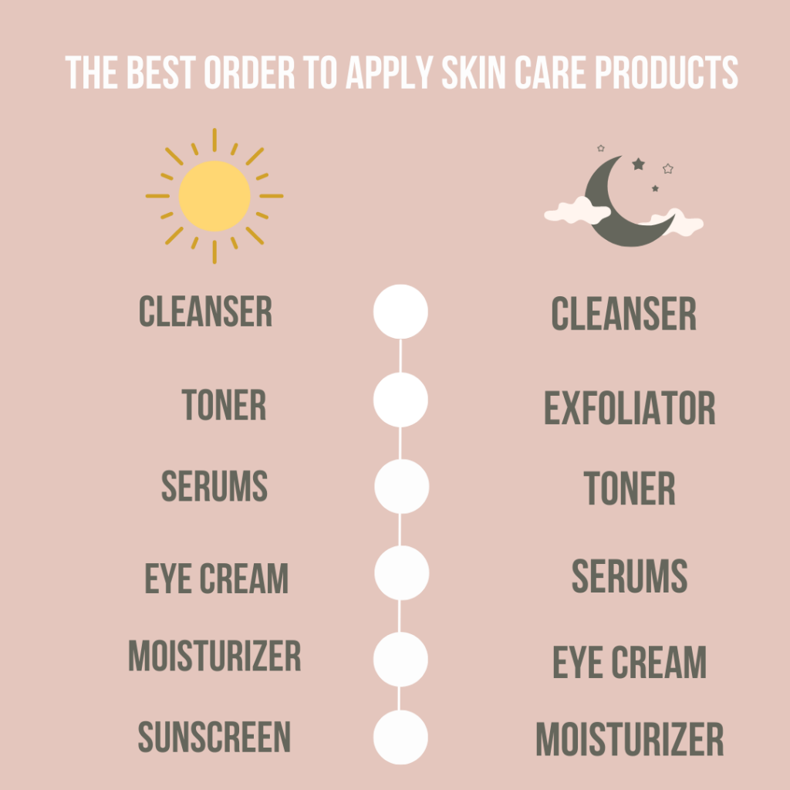

Welcome to skincare 101
A dive into
Products
There are literally thousands of products in the skincare aisle and we know it can be overwhelming. The process of caring for your skin doesnt have to be complicated. Below, we are breaking down the steps and basic products to keep your face healthy and glowing.
Cleanser
This clears away impurities and excess oil that can clog pores and dull skin. But be gentle: “Many people cleanse too often or use a cleanser thats overly harsh, which will actually break down your skins protective barrier”. If you have dry or sensitive skin, try washing only at night and rinsing your face with water in the morning.
There are different types of cleansers for different skin types:
- Oily skin: A foaming or gel cleanser will ensure adequate removal of excess dirt and oil from your skin; ingredients like niacinamide and salicylic acid can help regulate and remove excess oil.
- Acne-prone skin: A gentle foaming cleanser with acne-fighting ingredients like salicylic acid, glycolic acid, benzoyl peroxide or sulfur is your best bet.
- Dry skin: Look for a lotion, cream or balm formula with hydrating ingredients like ceramides, glycerin, hyaluronic acid and botanical oils.
- Sensitive skin: Try a micellar water, an ultra-gentle cleanser that includes tiny particles called micelles that trap impurities and lift them away without drying your skin in the process.
Exfoliator
In addition to clearing away dead and dry skin, a regular exfoliation routine can improve your skins clarity, radiance, and youthfulness by unclogging pores and boosting circulation and lymphatic drainage. Importantly though, the process of removing dead and dry skin allows your other skincare products to penetrate more deeply and effectively. Over time, the habit helps stimulate collagen synthesis, improving your skins texture and lessening the appearance of fine lines and wrinkles. We consider this an essential self-care step that can be done on a weekly or biweekly basis after cleansing and before adding serum, toner, or moisturizer.
Toner
Toners are skincare liquids that are applied to dry skin after cleansing using fingers, a cotton ball or cloth, and before using other leave-on skincare treatments like serums and moisturizers. A good toner can help ensure your skin is totally clean and grime-free, plus give it an extra dose of active ingredients.
- If you have acne-prone skin, look for a toner with hydroxy acids, including salicylic acid and lactic acid, which increase cell turnover.
- For dry or sensitive skin, seek out a hydrating toner (or its sister, an essence) made without parching alcohol and with ingredients like glycerin and hyaluronic acid to soothe.
- For combination skin, opt for gentle exfoliants, hydration boosters and antioxidants like vitamin C, vitamin E and green tea, which can combat free radicals and prevent skin damage.
- For oily skin, look for astringents, such as alcohols or witch hazel, that tighten pores.
Serum
A serum tailored to your skin concerns can both treat and protect, delivering concentrated amounts of powerful ingredients that can address a number of complexion issues, from wrinkles to dark spots — and if you have multiple concerns, you can use several different serum formulas. Just be sure to read the labels carefully, because some serums are best used in the morning, while others are ideal for nighttime.
- Hyaluronic acid serums: They draw moisture into the skin, combatting dryness and dullness and also plumping skin.
Niacinamide:A form of vitamin B3 that brightens and evens skin tone, boosts collagen production and calms inflammation. - Retinoids: Stimulate cell turnover to increase collagen production and reduce wrinkles and hyperpigmentation. Retinol is best used at night.
- Peptides: Made of amino acids, they are the building blocks of collagen and can boost its production to smooth lines and increase skin's firmness.
Eye cream
Eye creams are different than face creams because they're formulated specifically for the delicate eye area, which ages faster than the rest of your face — and therefore fall into the "treat" category, too. If you're concerned about fine lines, wrinkles, a lack of firmness, dark circles or undereye bags, an eye treatment product is definitely a good option.
Moisturizer
Next come face moisturizers, which keep your skin soft and hydrated and help strengthen its barrier. If you have oily or acne-prone skin, opt for a lighter moisturizer during the daytime, such as a lotion or gel that will absorb quickly and won't pill under makeup. If your skin is dry, try a thicker formula, like a cream. Either way, dermatologists recommend moisturizers for all skin types year round, since hydrating is crucial for keeping skin youthful and healthy. “Look for ingredients like ceramides or hyaluronic acid, since these ingredients are the building blocks of moisture retention in skin”.
Sunscreen
Dermatologists agree that sunscreen is the most important step in any skincare routine for every skin type and age. “If you don't wear sunscreen, you might as well not do any of the other steps”.
“The sun is the number one reason skin ages prematurely.” The damage isn't only cosmetic, no matter what your skin color: “People of color can and do get skin cancer”. Additionally, if you're treating hyperpigmentation without daily SPF use, it's like taking two steps forward and one step backward.”
Routine
Having a consistent and basic routine helps the most in achieving great and long lasting results. These can be divided into your day routine and night routine.
Day Routine
Morning skin care routines are all about prevention and protection. Your face is going to be exposed to the outside environment, so necessary steps include moisturizer and sunscreen.
These are a step by step breakdown of the products order to use:
- Cleanser
- Toner
- Serums
- Eye Cream
- Moisturizer
- Sunscreen
Night routine
Focus on repairing the damage done during the day with thicker products at night. This is also the time to use anything that makes skin sensitive to sunlight, including physical exfoliants and chemical peels.
These are a step by step breakdown of the products order to use:
- Cleanser
- Exfoliator
- Toner
- Serums
- Eye Cream
- Moisturizer
Testimonials
Here are some wonderful feedback from our lovely clientele
| Clients | |
|---|---|
| Ella | By following a simplified skin care regimen and understanding my skin better by the help of Ta Peau, I was able to clear my skin and understand what it needs. |
| Aliyah | Acne has been a problem issue for me since I was a teen, I just needed to know what to do effectively and that's exactly what Ta Peau's team helped me achieve. I have a better understand and it's not overwhelming at all. |
| Kate | I use a basic skin care routine but I needed an elevated product recommendation, I reached out to Ta Peau and we came up with a routine that helped incorporate products that transformed my skin from looking dull to be more brighter and more plump. |